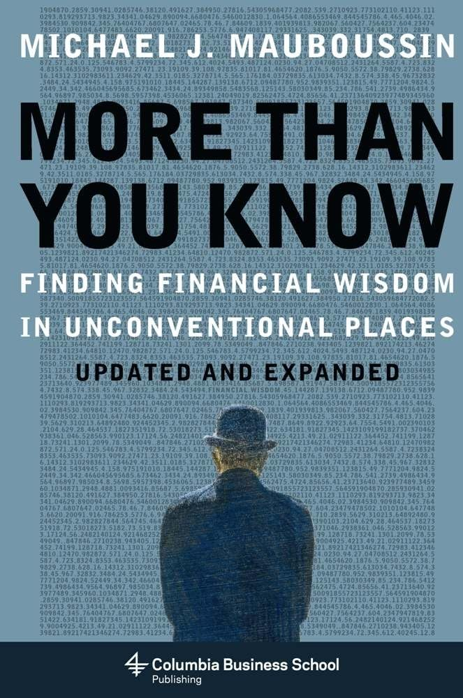

这本书最初并不是作为一本书写成的。迈克尔·莫布森（Michael J. Mauboussin）当时是美盛资本管理公司（Legg Mason Capital Management）的首席投资策略师，同时在哥伦比亚商学院教授证券分析，他把多年间写给客户的一篇篇策略随笔汇编成册，于2006年结集出版，2008年又推出增订版。全书的出发点来自生物学家爱德华·威尔逊（E. O. Wilson）提出的"融通"（consilience）概念——莫布森相信，投资的智慧不该只从财报和估值模型里找，赌场、赛马场、蚂蚁群落、棒球击球区里同样藏着可以迁移到市场上的思维方式。
全书分为四个部分：投资哲学、投资心理学、创新与竞争战略、科学与复杂性理论。莫布森反复强调一个被多数人忽略的区分——过程与结果。他借用一个二乘二的矩阵指出，好的决策也可能带来坏结果，糟糕的决策也可能侥幸获利，投资者应当评判决策过程的质量，而不是被单次结果误导。他引用赛马撰稿人史蒂文·克里斯特（Steven Crist）的观点说明，赢家不在于挑中跑得最快的马，而在于赔率与胜率错配时下注——这正是"期望值思维"。谈到"手感发烫"的连胜幻觉时，他援引泰德·威廉姆斯（Ted Williams）的《击球的科学》：这位打出四成打击率的传奇球员把好球区划成七十七个格子，只对落在最佳格子里的球挥棒。等待属于自己的"肥球"，是击球与投资共通的纪律。
第四部分把市场视为一个复杂自适应系统。莫布森用物理学家佩尔·巴克（Per Bak）的沙堆实验说明"自组织临界"：不断落下的沙粒会让沙堆维持在崩塌的边缘，一粒微不足道的沙子就可能引发大小无法预测的雪崩，市场的暴涨暴跌同样服从幂律分布，而非钟形曲线。他也借同事比尔·米勒（Bill Miller）连续十五年跑赢标普500的纪录，讨论运气与技巧如何纠缠。本书的分量很大程度上来自同行的背书。哈佛商学院教授、《创新者的窘境》作者克莱顿·克里斯坦森（Clayton Christensen）称："每一位投资者和分析师都需要读这本书——而且要读好几遍。莫布森无人能及。"哈佛心理学家史蒂芬·平克（Steven Pinker）则说，它是"任何对人性科学及其与金融世界的关联感兴趣的人的必读之作"。该书曾被《商业周刊》评为年度最佳商业书，被《战略与经营》评为最佳经济学著作，并被译成八种语言。
这本书不提供选股清单，它改变的是读者归因的方式。当一笔交易赚钱时，多数人本能地把功劳归于自己的判断；莫布森训练读者去追问：这是好过程带来的好结果，还是坏过程碰上了好运气？在一个短期充满噪声、长期才显露技巧的领域里，把注意力从结果转向过程、从单一学科转向多学科的融通，恰恰是最难却最值得的功课。